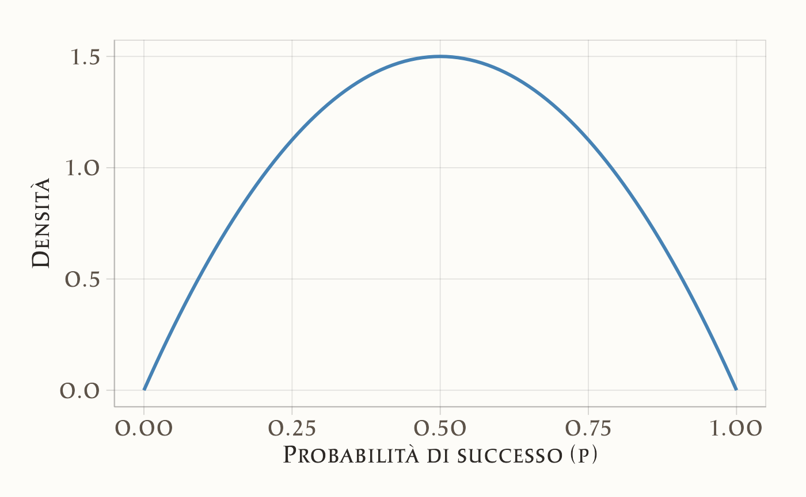
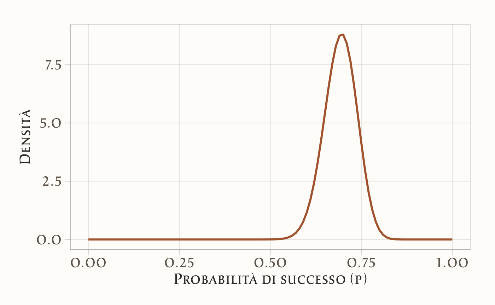
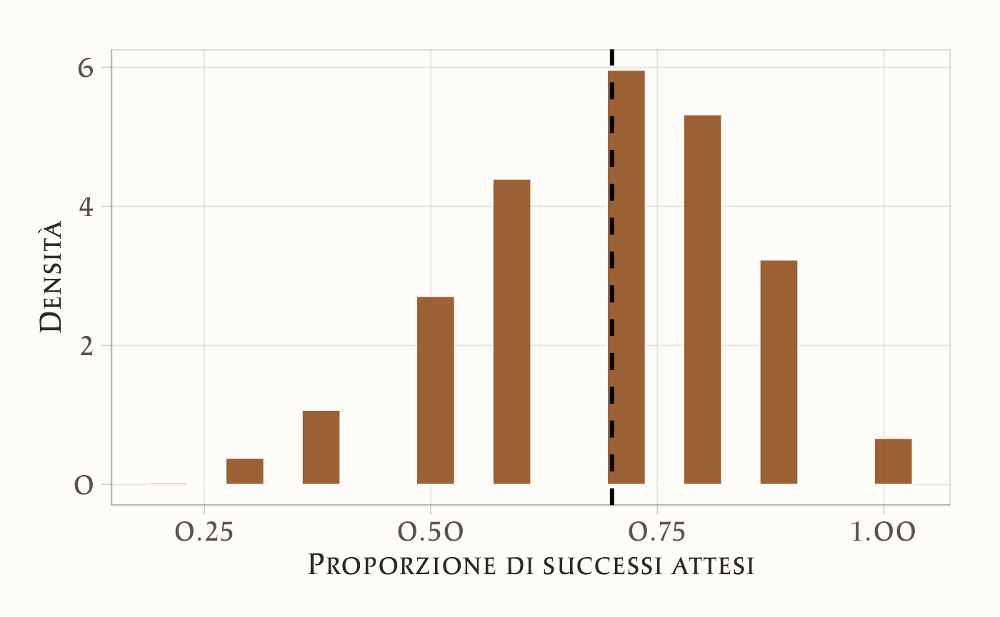

11 Distribuzione predittiva a posteriori
“The general idea of posterior predictive checking is simple: if a model is a good fit to data, then replicated data generated under the model should look similar to the observed data.”
– Andrew Gelman, Xiao-Li Meng & Hal Stern, Posterior predictive assessment of model fitness via realized discrepancies (Statistica Sinica, 1996, p. 733)
Introduzione
Nei capitoli precedenti abbiamo visto due aspetti fondamentali dell’inferenza bayesiana: da un lato, la costruzione delle distribuzioni a posteriori per i parametri di interesse; dall’altro, l’importanza di verificare i priori attraverso i controlli predittivi, per assicurarci che le nostre assunzioni iniziali siano coerenti con la realtà psicologica che vogliamo studiare.
Ora compiamo un passo ulteriore: invece di chiederci se i nostri priori siano ragionevoli, ci chiediamo se l’intero modello, dopo aver incorporato i dati osservati, sia in grado di generare previsioni plausibili. Questo ci porta al concetto di distribuzione predittiva a posteriori (posterior predictive distribution).
La logica è semplice e potente: se un modello è una rappresentazione credibile del processo che ha generato i dati, allora dovrebbe essere in grado non solo di adattarsi ai dati raccolti, ma anche di simulare dati nuovi con caratteristiche simili. In questo senso, le distribuzioni predittive a posteriori diventano uno strumento centrale per la valutazione dei modelli: collegano direttamente i parametri stimati ai dati futuri che ci aspettiamo di osservare.
In questo capitolo vedremo come costruire la distribuzione predittiva a posteriori, come interpretarla e come utilizzarla per verificare la coerenza del modello con l’evidenza empirica. Questo approccio ci permetterà di mettere alla prova in modo pratico la capacità del modello di spiegare e prevedere i fenomeni psicologici che ci interessano.
Panoramica del capitolo
- Previsione bayesiana: incorporare incertezza parametrica e variabilità intrinseca.
- Verifica di coerenza: valutare l’adeguatezza del modello ai dati osservati.
- Caso beta-binomiale: applicazione pratica del framework predittivo.
11.1 Definizione formale
Si considerino dati osservati \(y = \{y_1, y_2, \ldots, y_n\}\), generati da un modello probabilistico parametrizzato da \(\theta\), dove \(\theta\) può rappresentare una probabilità, una media, un vettore di coefficienti o altri parametri di interesse. La conoscenza iniziale su \(\theta\) è formalizzata attraverso una distribuzione a priori \(p(\theta)\). L’osservazione dei dati consente di aggiornare questa conoscenza mediante il teorema di Bayes, ottenendo la distribuzione a posteriori:
\[ p(\theta \mid y) = \frac{p(y \mid \theta)\, p(\theta)}{p(y)}, \] dove:
\(p(\theta \mid y)\) è la distribuzione a posteriori, che rappresenta l’incertezza su \(\theta\) condizionata ai dati osservati;
\(p(y \mid \theta)\) è la funzione di verosimiglianza, che specifica la probabilità dei dati dati i parametri;
\(p(\theta)\) è la distribuzione a priori;
-
\(p(y)\) è l’evidenza marginale, calcolata come
\[ p(y) = \int p(y \mid \theta) p(\theta)\, d\theta. \]
11.1.1 La distribuzione predittiva a posteriori
Sia \(\tilde{y}\) una nuova osservazione da prevedere. La distribuzione predittiva a posteriori \(p(\tilde{y} \mid y)\) fornisce la distribuzione probabilistica di \(\tilde{y}\) condizionata ai dati osservati.
11.1.1.1 Natura di \(\tilde{y}\)
- \(\tilde{y}\) rappresenta un dato futuro non ancora osservato;
- Nell’esempio binomiale, se \(y\) è il numero di successi in \(n\) prove, \(\tilde{y}\) può rappresentare il numero di successi in \(n_{\text{new}}\) prove future.
11.1.1.2 Relazione condizionale
- \(p(\tilde{y} \mid \theta)\) esprime la probabilità di \(\tilde{y}\) assumendo noto il parametro \(\theta\);
- Nel caso binomiale: \(p(\tilde{y} \mid \theta) = \binom{n_{\text{new}}}{\tilde{y}} \theta^{\tilde{y}} (1-\theta)^{n_{\text{new}}-\tilde{y}}\).
11.1.1.3 Integrazione sull’incertezza parametrica
Poiché \(\theta\) è incerto, la distribuzione predittiva a posteriori integra su tutti i possibili valori di \(\theta\), pesati secondo la distribuzione a posteriori:
\[ p(\tilde{y} \mid y) = \int p(\tilde{y} \mid \theta)\, p(\theta \mid y)\, d\theta. \tag{11.1}\]
11.1.1.4 Interpretazione
La distribuzione predittiva a posteriori \(p(\tilde{y} \mid y)\) rappresenta la migliore previsione probabilistica per dati futuri, incorporando tanto l’incertezza sui parametri del modello quanto la variabilità intrinseca del processo generativo dei dati.
11.2 Il modello Beta-Binomiale
Si consideri un esperimento binomiale consistente in \(n\) prove indipendenti, dove si osserva il numero di successi \(y\) (ad esempio, il numero di teste nel lancio di una moneta). L’approccio bayesiano si articola in tre fasi fondamentali:
-
Specificazione della distribuzione a priori La conoscenza iniziale riguardante la probabilità di successo \(p\) viene formalizzata attraverso una distribuzione Beta(\(\alpha, \beta\)), particolarmente appropriata per parametri definiti sull’intervallo unitario:
- Il parametro \(\alpha\) rappresenta un numero pseudo-osservato di successi;
- Il parametro \(\beta\) rappresenta un numero pseudo-osservato di insuccessi.
Questa parametrizzazione consente di incorporare conoscenze pregresse in forma di “evidenza virtuale”.
-
Aggiornamento bayesiano alla distribuzione a posteriori Dopo l’osservazione di \(y\) successi in \(n\) prove, la distribuzione a posteriori si ottiene mediante aggiornamento coniugato:
\[ p \mid y \sim \text{Beta}(\alpha + y, \beta + n - y). \]
Questa distribuzione caratterizza completamente l’incertezza residua sul parametro \(p\) condizionatamente ai dati osservati.
-
Costruzione della distribuzione predittiva a posteriori Per prevedere il numero di successi \(y_{\text{new}}\) in \(n_{\text{new}}\) prove future, si integra l’incertezza parametrica con la variabilità campionaria attraverso il seguente procedimento:
- Campionamento parametrico: \(p^{(s)} \sim \text{Beta}(\alpha + y, \beta + n - y)\)
- Generazione predittiva: \(y_{\text{new}}^{(s)} \sim \text{Binomial}(n_{\text{new}}, p^{(s)})\)
La distribuzione empirica dei valori \(y_{\text{new}}^{(s)}\) costituisce un’approssimazione Monte Carlo della distribuzione predittiva a posteriori, incorporando sia l’incertezza epistemica su \(p\) sia la variabilità aleatoria del processo binomiale.
11.3 Un esempio numerico
11.3.1 I dati e le nostre conoscenze iniziali
- Dati osservati: 70 successi su 100 prove (ad esempio, 70 teste su 100 lanci di moneta)
- Conoscenza iniziale (prior): usiamo una distribuzione Beta(2, 2). Questa prior è “debole” e suggerisce che pensiamo che la moneta sia probabilmente equilibrata (p ≈ 0.5), ma siamo aperti ad altre possibilità.
11.3.2 Aggiornamento delle nostre conoscenze
Dopo aver visto i dati, aggiorniamo le nostre convinzioni sulla probabilità di successo p:
alpha_posterior = 2 + 70 = 72
beta_posterior = 2 + (100 - 70) = 32Ora crediamo che p segua una distribuzione Beta(72, 32), che è centrata attorno a 0.7.
11.3.3 Simulazione delle previsioni
Vogliamo prevedere cosa succederà in 10 lanci futuri:
# Dati osservati
successi_osservati <- 70
lanci_totali <- 100
# Prior (conoscenza iniziale)
alpha_prior <- 2
beta_prior <- 2
# Posterior (conoscenza aggiornata)
alpha_post <- alpha_prior + successi_osservati
beta_post <- beta_prior + (lanci_totali - successi_osservati)
# Simuliamo 1000 valori plausibili per p
valori_p <- rbeta(1000, alpha_post, beta_post)
# Per ogni valore di p, simuliamo 10 lanci futuri
successi_futuri <- rbinom(1000, size = 10, prob = valori_p)
# Calcoliamo le proporzioni di successo
proporzioni_future <- successi_futuri / 1011.3.4 Spiegazione passo per passo
Abbiamo osservato 70 successi su 100 lanci. Con una prior Beta(2,2), la distribuzione a posteriori diventa Beta(72,32). Questo significa che non conosciamo il valore esatto della probabilità di successo \(p\), ma possiamo descrivere in modo plausibile l’incertezza che lo circonda: molto probabilmente \(p\) si trova vicino a 0.7, con una certa variabilità intorno a questo valore.
Per rappresentare questa incertezza, estraiamo 1000 valori da una distribuzione Beta(72,32): valori_p <- rbeta(1000, 72, 32). Ciascun valore estratto è un candidato possibile per \(p\), compatibile con i dati osservati e con la nostra conoscenza iniziale. A questo punto, ci chiediamo: cosa potremmo osservare nei prossimi lanci? Per rispondere, per ogni valore di \(p\) simuliamo 10 nuovi lanci, ottenendo così 1000 possibili scenari futuri: successi_futuri <- rbinom(1000, size = 10, prob = valori_p).
Infine, trasformiamo il numero di successi in proporzioni dividendo per 10, in modo da avere risultati immediatamente interpretabili come probabilità di successo nei lanci futuri: proporzioni_future <- successi_futuri / 10. In altre parole, otteniamo un quadro di ciò che possiamo aspettarci, tenendo insieme due fonti di incertezza: da un lato non sappiamo il valore esatto di \(p\), dall’altro anche conoscendo \(p\) i risultati dei lanci rimarrebbero comunque soggetti al caso.
Il vettore proporzioni_future riassume queste possibilità: non una singola previsione puntuale, ma un’intera distribuzione di esiti futuri, coerente con i dati raccolti e con il modello bayesiano adottato.
11.3.5 Visualizziamo i risultati
Distribuzione iniziale (prima di vedere i dati):
ggplot(data.frame(x = c(0, 1)), aes(x = x)) +
stat_function(fun = dbeta,
args = list(shape1 = alpha_prior, shape2 = beta_prior),
color = "#4682B4", size = 1) +
labs(x = "Probabilità di successo (p)",
y = "Densità")
Conoscenza aggiornata (dopo aver visto i dati):
ggplot(data.frame(x = c(0, 1)), aes(x = x)) +
stat_function(fun = dbeta,
args = list(shape1 = alpha_post, shape2 = beta_post),
color = "#A0522D", size = 1) +
labs(x = "Probabilità di successo (p)",
y = "Densità")
Previsioni per i prossimi 10 lanci:
ggplot(data.frame(proporzioni = proporzioni_future), aes(x = proporzioni)) +
geom_histogram(aes(y = ..density..), bins = 20) +
geom_vline(aes(xintercept = successi_osservati / lanci_totali),
color = "black", size = 1, linetype = "dashed") +
labs(x = "Proporzione di successi attesi",
y = "Densità")
11.3.6 Interpretazione dei risultati
- La nostra conoscenza su \(p\) è ora concentrata attorno a 0.7 (grafico in rosso).
- Le previsioni per 10 lanci futuri sono più variabili perché:
- Siamo ancora un po’ incerti sul valore esatto di \(p\).
- Anche se conoscessimo p perfettamente, 10 lanci potrebbero dare risultati leggermente diversi.
- Il risultato osservato (70% di successi) cade nella zona più probabile delle nostre previsioni: questo ci dice che il nostro modello è ragionevole e può essere usato per fare previsioni future.
In pratica: se dovessi scommettere sui prossimi 10 lanci, ti aspetteresti probabilmente 6-8 successi, ma potrebbero essercene anche 5 o 9 per puro caso.
Riflessioni conclusive
Le distribuzioni predittive a posteriori rappresentano il naturale completamento del percorso iniziato con i priori. Se i prior predictive checks ci consentono di controllare la plausibilità delle nostre assunzioni iniziali, i posterior predictive checks ci permettono di verificare la plausibilità del modello alla luce dei dati.
Dal punto di vista concettuale, questo passaggio è cruciale: sposta l’attenzione dai parametri astratti ai dati concreti, e ci chiede di valutare i modelli sulla base della loro capacità di generare osservazioni simili a quelle reali. In questo senso, la distribuzione predittiva a posteriori non è soltanto un accessorio tecnico, ma una vera e propria prova di realtà per i modelli psicologici.
Dal punto di vista applicativo, questo approccio rafforza la trasparenza e la robustezza delle nostre inferenze. Non ci limitiamo più a riportare valori puntuali o intervalli credibili per i parametri: mostriamo esplicitamente quali dati il nostro modello ritiene plausibili e li confrontiamo con i dati effettivamente raccolti. Questo rende la comunicazione dei risultati più chiara e intuitiva, anche per chi non ha familiarità con la statistica bayesiana.
In sintesi, le distribuzioni predittive a posteriori ci ricordano che la forza dell’approccio bayesiano non risiede soltanto nella stima dei parametri, ma soprattutto nella capacità di prevedere e spiegare i fenomeni. Nei capitoli successivi vedremo come questa logica si estenda anche al confronto sistematico tra modelli, aprendo la strada a un approccio più rigoroso e cumulativo alla scienza psicologica.